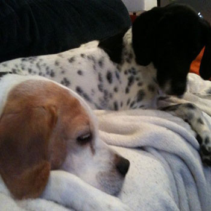
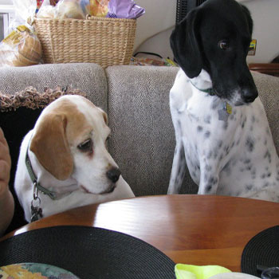

Wilson was born on April 14th 2007. Wilson has a mix of many dog breeds in him including Pointer, Hound and Dalmation. Wilson loves going to the park, swimming at the beach and playing with his friends. Wilson was rescued by us in the summer of 2007 and has been a very happy dog ever since. He has a doggy door leading to the backyard where he hangs out with some of his friends. When he comes back inside he always gets a treat. Wilson spends most of the day sleeping. Below are some pictures of Wilson's and his best friend Rebel.

